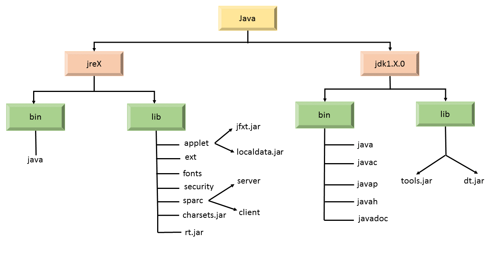
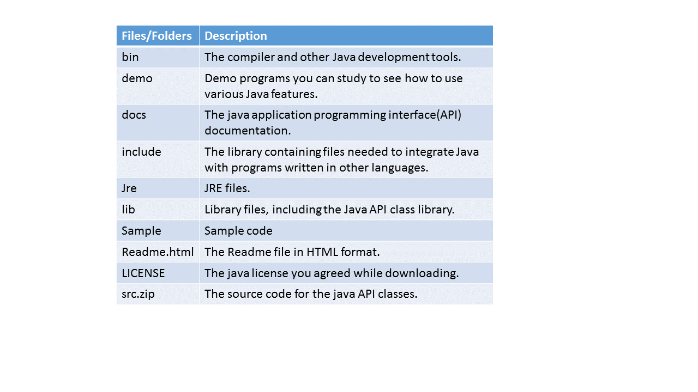
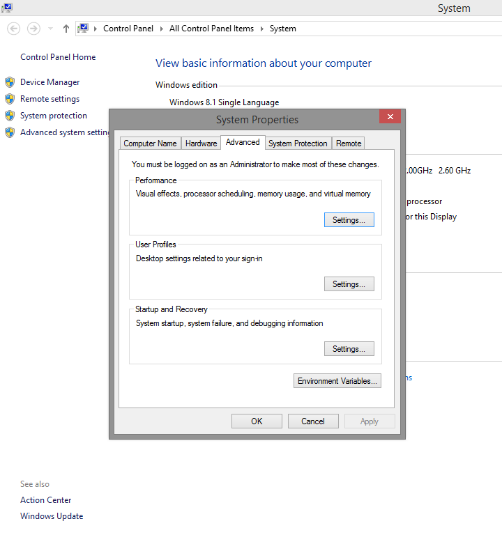
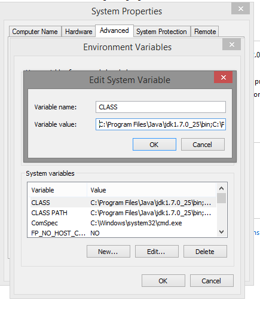
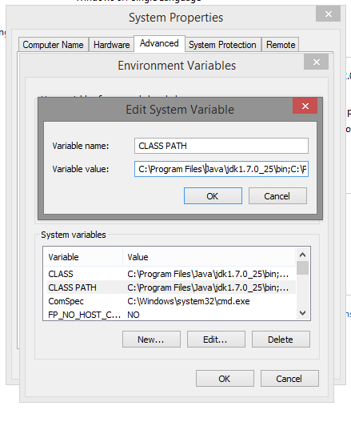

JDK File Structure
* Introduction
The Java Development Kit (JDK) is an implementation of either one of the Java SE, Java EE or Java ME platforms released by Oracle Corporation in the form of a binary product aimed at Java developers on Solaris, Linux, Mac OS X or Windows. The JDK includes a private JVM and a few other resources to make a Java Application. Since the introduction of the Java platform, it has been by far the most widely used Software Development Kit (SDK).
The JDK setup program creates several folders on your hard drive. The locations of these folders vary depending on your system, but in all versions of Windows, the JDK root folder is in the path Program Files\Java on your boot drive. The name of the JDK root folder also varies, depending on the Java version you've installed i.e. say. for version 1.7, the root folder is jdk1.7.0.
* Java Runtime Environment(JRE)
There are two parts of Java platform viz. JDK and JRE. The Java Runtime Environment (JRE) provides the libraries, the Java Virtual Machine(JVM), and other components to run applets and applications written in the Java programming language. In addition, two important deployment technologies are part of the JRE: Java Plug-in, which enables applets to run in popular browsers; and Java Web Start, which deploys standalone applications over a network.
The JRE does not contain tools and utilities such as compilers or debuggers for developing applets and applications.
* Java Development Kit(JDK)
The JDK is a superset of the JRE, and contains everything that is in the JRE, and the tools such as the compilers and debuggers necessary for developing applets and applications.
* Java Virtual Machine(JVM)
The Java Virtual Machine is responsible for the hardware and operating system-independence of the Java SE platform, the small size of compiled code (bytecodes), and platform security.
* Java Platform Tools
The Java SE platform works with an array of tools, including Integrated Development Environments (IDEs), performance and testing tools, and performance monitoring tools.
* JDK and JRE Structure
The following diagram shows most important files and directories where X is the JDK version.


In addition to jre,bin and lib, there are other folders in jdk1.X.0 :
i.
db
ii.
include
iii.
man
iv.
src.zip
The following table depicts the functions of a few folders and files.

* ClassPath
Classpath is a parameter- set either on the command-line, or through an environment variable- that tells the Java Virtual Machine or the Java compiler where to look for user-defined classes and packages.
Following steps illustrate the method to set the variables for Windows OS:
1. Right click on MyComputer, then click on Properties and then choose Advanced System Settings.
2. Select Environment Variables as shown below-

3. Click on New... to create new variable. Let's name it CLASS and set its path as-C:\Program Files\Java\jdk1.7.0_25\bin;C:\Program Files\Java\jre7 i.e. set the path of bin folder in jdk and the path of jre together.

4. Again click on New to create another variable- CLASS PATH and set its path as- C:\Program Files\Java\jdk1.7.0_25\bin;C:\Program Files\Java\jre7;C:\Program Files\Java\jre7\bin i.e. set the path of CLASS above and the bon of jre.

That's how we set the path in JAVA.